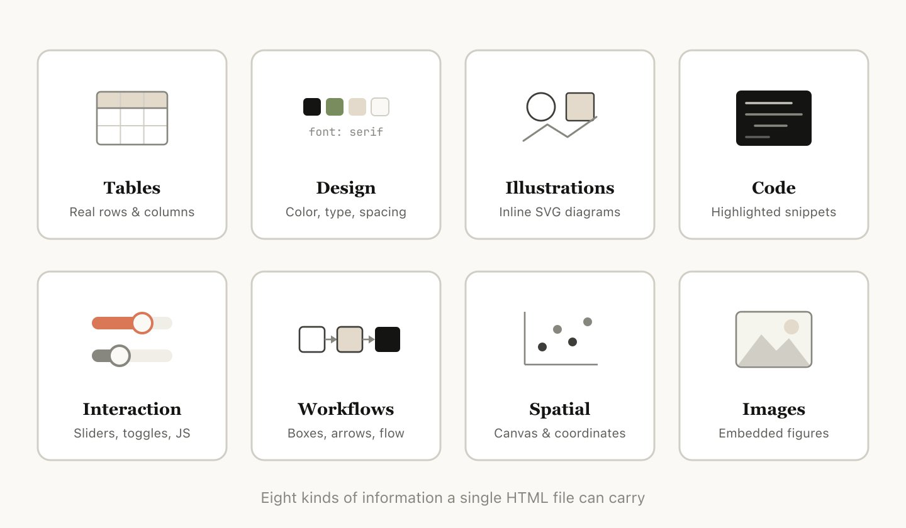
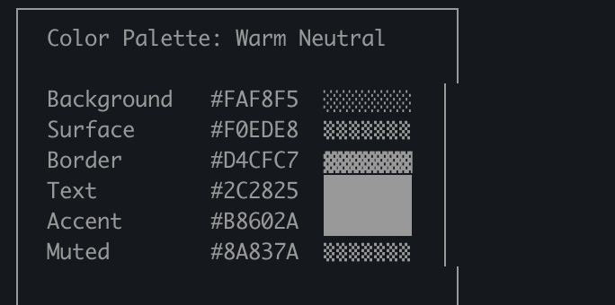
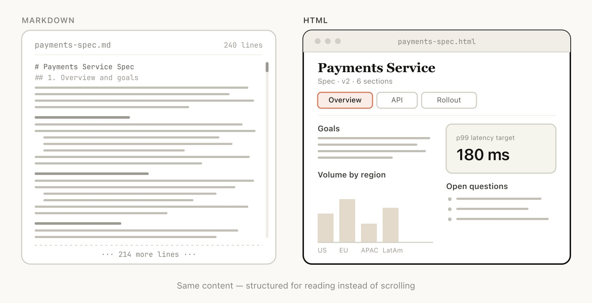
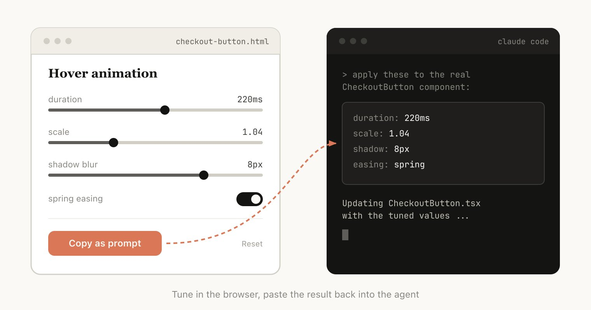
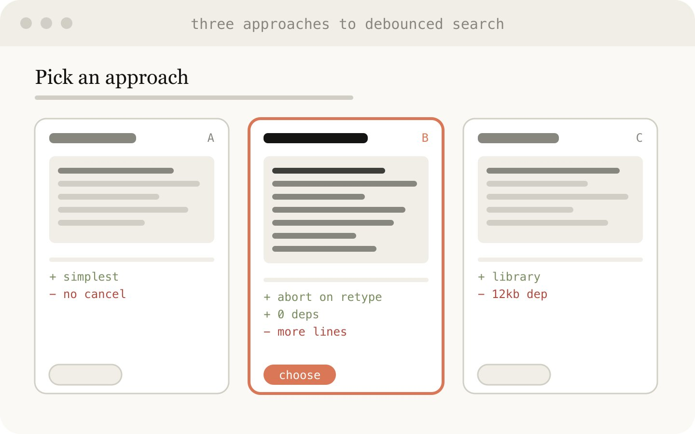
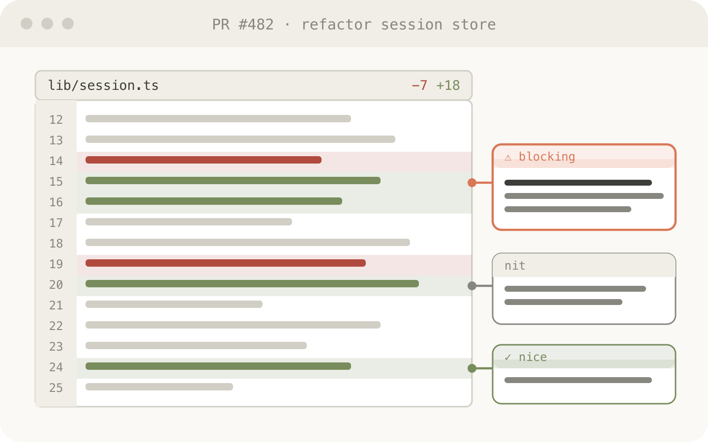
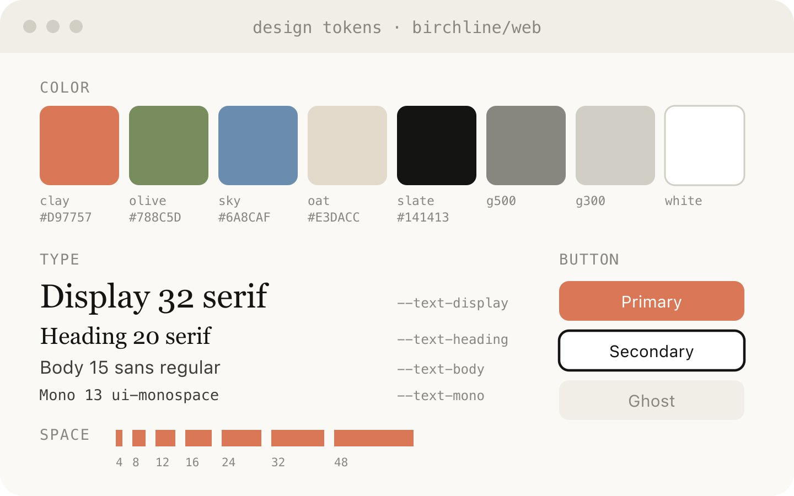
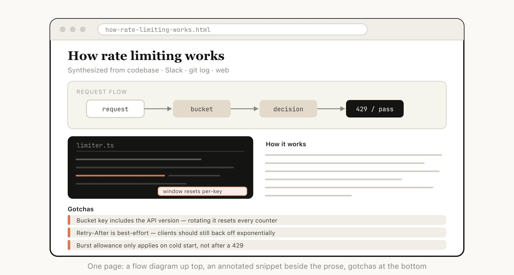
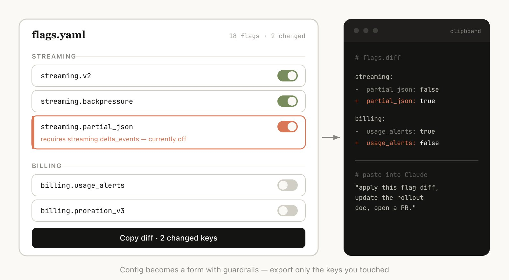

作者: Thariq (@trq212)
来源: X / Twitter
Markdown 已经成为 agent 用来与我们沟通的主导文件格式。它简单、可移植，具备一些富文本能力，也很容易由你编辑。Claude 甚至已经出人意料地擅长在 markdown 文件中使用 ASCII 绘制图表。
但随着 agent 变得越来越强大，我感觉 markdown 已经变成一种受限格式。我发现很难阅读超过一百行的 markdown 文件。我想要更丰富的可视化、颜色和图表，并且希望能够轻松分享它们。
我也越来越少亲自编辑这些文件，而是把它们用作 spec、参考文件、头脑风暴输出等。当我确实要做编辑时，通常也是提示 Claude 去编辑它们，这移除了 markdown 最大优势之一。
我已经开始更偏好把 HTML 作为输出格式，而不是 Markdown，并且越来越多地看到 Claude Code 团队中的其他人也在这样使用，原因如下。
（如果你想从一些示例开始，可以在这里看到很多：https://thariqs.github.io/html-effectiveness ，只是一定要回来继续阅读原因）

与 markdown 相比，HTML 可以传达丰富得多的信息。它当然可以做 headers 和格式化这类简单文档结构，但它也可以表示各种其他信息，例如：
我甚至会说，几乎不存在 Claude 能读取、但你无法用 HTML 相当高效地表示的信息集合。这使它成为模型向你传达深入信息、以及你审阅这些信息的一种高度高效方式。
我发现，在无法做到这一点时，模型可能会在 markdown 中做一些效率较低的事情，例如 ASCII 图表，或者我最喜欢的：像这张 Claude Code 截图中那样，用 unicode 字符估算颜色。

Claude Code 试图在 markdown 中展示颜色

随着 Claude 能够完成更复杂的工作，它也在编写越来越大的 spec 和 plan。实践中，我发现自己往往并不会真正阅读超过 100 行的 markdown 文件，而且我当然也无法让组织里的其他人阅读它。
但 HTML 文档更容易阅读，Claude 可以用视觉方式组织结构，使其非常适合通过 tabs、插图、链接等进行导航。它甚至可以做到移动端响应式，让你根据自己的设备形态以不同方式阅读。
Markdown 文件相当难分享，因为大多数浏览器并不能很好地原生渲染它们。你通常不得不把它们作为附件添加到邮件或消息中。
使用 HTML 时，只要你上传文件（例如上传到 S3），就可以轻松分享链接。你的同事可以在他们希望的任何地方打开它，并轻松引用它。
如果 spec、报告或 PR writeup 是 HTML 格式，别人真正阅读它的概率会高得多得多。

HTML 可以让你与文档交互，例如你可能想让它添加 sliders 或 knobs 来调整设计，或者允许你微调算法中的不同选项以查看会发生什么。你还可以要求它让你把这些更改复制成一个 prompt，再粘贴回 Claude Code。
阅读更多关于我的 playgrounds 帖子的内容，查看这种双向交互的示例：https://x.com/trq212/status/2017024445244924382
为什么使用 Claude Code 来制作 HTML 文件，而不是例如 ClaudeAI 或 Claude Design？最大的原因之一是 Claude Code 可以摄入的所有上下文。
例如，在写这篇文章时，我让 Claude Code 读遍我的代码文件夹，找到我生成过的所有 HTML 文件，对它们进行分组和分类，然后制作一个包含所有图表的 HTML 文件来表示每种类型。你在这篇文章中看到的图表就是其直接结果。
除了文件系统，Claude Code 还可以使用你的 MCPs（如 Slack、Linear 等）、你的 web browser（通过 Chrome 中的 Claude）、你的 git history 等找到额外上下文。
用 Claude 制作 HTML 文档就是更有趣，也让我感觉更参与、更投入于创作，这本身就足够了。
我有点担心人们读完这篇文章后会把它变成一个 /html skill 或类似东西。虽然那可能有一些价值，但我想强调的是，你不需要做太多就能让 Claude 做到这一点。你只需要要求它“make a HTML file”或“make a HTML artifact”。
诀窍在于知道你希望这个 artifact 做什么，以及你可能如何使用它。随着时间推移你也许会制作一个 skill，但现在我建议从零开始提示，以掌握如何在不同场景中使用它。
为了让这件事更具体，我为不同用例制作了许多不同的 HTML 文件。你可以在这里查看全部：https://thariqs.github.io/html-effectiveness/ ，下面是概览。

HTML 是 Claude 深入问题的丰富画布。当我开始处理一个问题时，我不期望得到一个简单的 markdown plan，而是期望制作一组 HTML 文件。例如，我可能会先让 Claude Code 头脑风暴并创建一些不同选项的探索。然后我会要求它进一步展开其中一个，也许制作 mockups 或代码片段。最后，当我感觉不错时，我会让它编写 implementation plan。当我对计划满意时，我会创建一个新会话，并传入所有这些文件让它实现。
在验证时，我也会要求 verification agent 读入这些文件，这样它会拥有关于所需内容的更广泛上下文。
示例 Prompts：
使用场景：

代码在 Markdown 文件中可能很难阅读。但使用 HTML，我们可以渲染 diffs、annotations、flowcharts、modules 等。用它来理解 agent 编写的代码、获取 code review，或向审查你代码的人解释一个 PR。我发现这通常比默认的 Github diff view 效果更好，而且我现在会给自己创建的每个 PR 附上一个 HTML code explainer。
示例 prompt：
Help me review this PR by creating an HTML artifact that describes it. I'm not very familiar with the streaming/backpressure logic so focus on that. Render the actual diff with inline margin annotations, color-code findings by severity and whatever else might be needed to convey the concept well.
使用场景：

Claude Design 基于 HTML，因为 HTML 在设计上极具表达力，即使你的最终表面不是 HTML。Claude 可以用 HTML 草拟设计，然后用你选择的语言编写它，无论是 React、Swift 等。
你还可以原型化交互，例如 animations、actions 等。考虑让 Claude 制作 sliders、knobs 等，以精确调校你正在寻找的东西。
示例 prompt：
I want to prototype a new checkout button, when clicked it does a play animation and then turns purple quickly. Create a HTML file with several sliders and options for me to try different options on this animation, give me a copy button to copy the parameters that worked well.
用于：

Claude Code 非常擅长跨多个数据源综合信息，并将其转换成可读性强的报告。你可以提示 Claude 搜索你的 Slack、代码库、git history、互联网等，并用它为自己、为领导层、为团队等生成极其易读的报告。
你可以把它组装成长篇 HTML 文档、interactive explainer，甚至 slideshow/deck。要求 Claude 使用 SVG 绘制图表来帮助可视化。
例如，在我关于 prompt caching 的帖子中，我让 Claude 在阅读 git history 之后，为我准备一份深入研究 prompt caching 所有变更的 HTML 文件供我阅读。
示例 prompt：
I don't understand how our rate limiter actually works. Read the relevant code and produce a single HTML explainer page: a diagram of the token-bucket flow, the 3–4 key code snippets annotated, and a "gotchas" section at the bottom. Optimize it for someone reading it once.
用于：

有时很难纯粹在文本框中描述你想要什么。在这种情况下，我会让 Claude 为我构建一个一次性编辑器，专门针对我正在处理的确切内容。不是产品，也不是可复用工具，而是一个单个 HTML 文件，为这一份数据量身定制。
诀窍总是以导出作为结尾：一个 "copy as JSON" 或 "copy as prompt" 按钮，把我在 UI 中做的任何事情转换回可以粘贴到 Claude Code 中的内容。
示例 prompts：
用于：
我一直在告诉很多人我如何切换到 HTML，也看到了一些反复出现的问题。
它不是更低 token 效率吗？
虽然 markdown 通常使用更少 tokens，但我发现 HTML 增加的表达力，以及我阅读它的可能性高得多，意味着总体上我会得到更好的输出。借助 Opus 4.7 的 1MM context window，增加的 token 使用量在上下文窗口中并不明显。
你现在什么时候使用 markdown？
老实说，我几乎已经完全停止在几乎所有事情上使用 markdown，但我可能站在相当 HTML maximalist 的一边。
我如何查看 HTML 文件？
我通常只是在本地浏览器中打开它（你可以让 Claude 打开它），或者如果你想要可分享链接，就上传到 S3。
这不会比 markdown 生成时间更长吗？
确实会更长！HTML 可能比 Markdown 长 2-4 倍，但我发现结果值得。
版本控制怎么办？
这老实说是 HTML 最大的缺点之一，与 Markdown 相比，HTML diffs 很嘈杂，也很难审查。
我如何让 Claude 匹配我的品味 / 不要做得难看？
frontend design plugin 可以帮助 Claude 制作好的 HTML 文件。但如果要匹配你自己公司的风格，你可以通过把 Claude 指向你的代码库，创建一个单一的 design system HTML 文件。然后你可以把那个 design system 文件作为其他 html 文件的参考。
以上所有内容想表达的是，我认为我使用 HTML 的真正原因，是我感觉自己与 Claude 更加保持在回路中。我曾开始担心，因为我已经不再深入阅读计划，我就只能任由 Claude 自己做选择。
但我很高兴地说，使用 HTML 时，我反而比以往任何时候都更感觉自己在回路中。希望你也是如此。